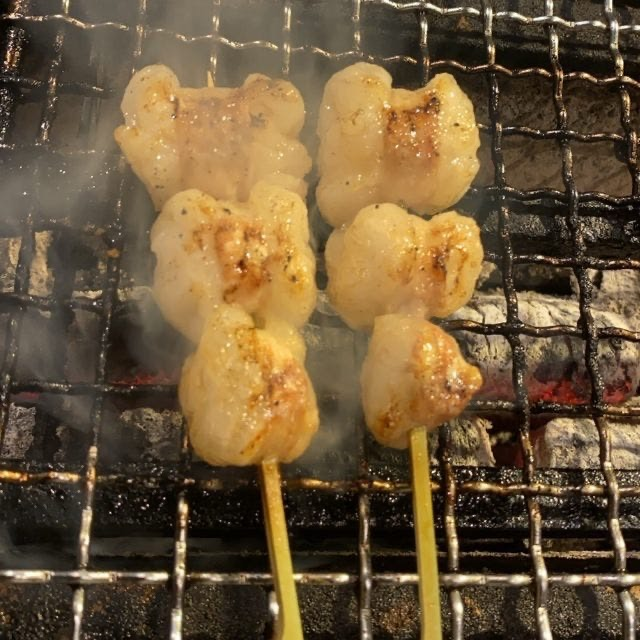
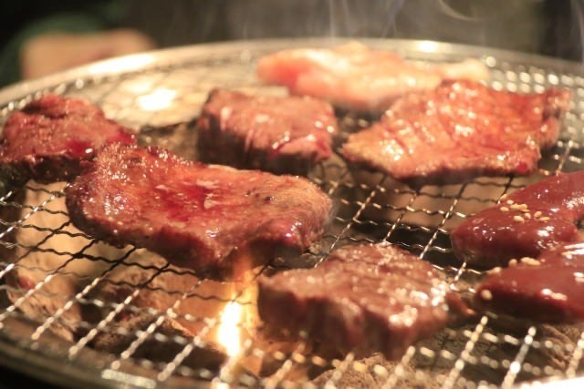

Our Commitment
炎が引き出す、旨みという仕事
素材はシンプルに、火入れだけを丁寧に。とらっ鳥屋の三つのこだわり。

鶏
01 — Tsukuba Chicken
臭みのない、つくば鶏
柔らかくクセのない肉質が持ち味の「つくば鶏」。串の一本一本を、素材の甘みが分かる焼き加減で仕上げます。

炭
02 — Shichirin Charcoal
七輪と炭火の仕事
炭火で焼き上げることで旨み成分のアミノ酸が増え、ジューシーに。七輪ならではの香ばしさをそのまま食卓へ。

塩
03 — Moshio Salt
ひとつまみの藻塩
タレに頼りすぎず、こだわりの藻塩で素材そのものの味を引き立てる。焼きたてを、まず塩で味わってほしい一皿。